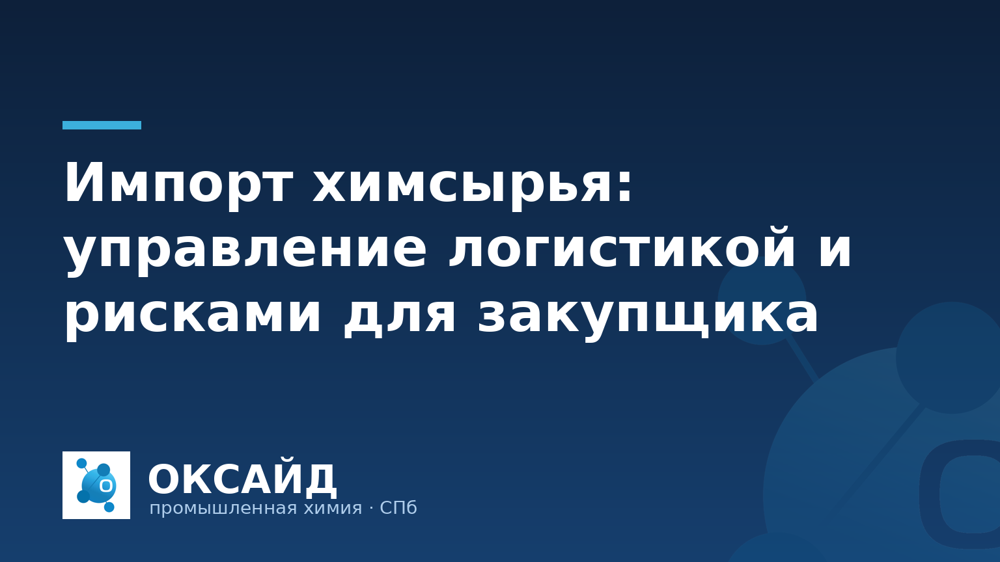

Закупка химического сырья для промышленных предприятий часто включает импортные поставки. Этот процесс сопряжен с комплексом задач, выходящих за рамки выбора продукта и цены. Закупщикам необходимо учитывать международную логистику, таможенное регулирование, валютные риски и обеспечение стабильности поставок. Понимание этих аспектов помогает минимизировать затраты и избежать сбоев в производственном цикле.
Основа успешного импорта — выбор надежного поставщика. Это не только вопрос цены, но и гарантии качества, стабильности поставок и соответствия нормативным требованиям. Проверка репутации поставщика, его производственных мощностей и системы контроля качества до заключения контракта снижает потенциальные риски. Целесообразно запрашивать образцы, проводить их лабораторный анализ и проверять наличие отраслевых стандартов.
Контроль качества импортируемого сырья начинается на производстве и продолжается до момента приемки на складе покупателя. Важно убедиться, что каждая партия сопровождается полным комплектом документов, включая паспорт качества (COA), соответствующий заявленным характеристикам. ООО «Оксайд» предоставляет все необходимые сертификаты и паспорта качества, что обеспечивает прозрачность и надежность поставок.
Логистика импорта химического сырья требует тщательного планирования. Выбор оптимального вида транспорта (морской, железнодорожный, автомобильный, авиационный) зависит от типа продукта, его класса опасности, объема партии, срочности и географии поставки. Для больших объемов неопасных грузов часто используют морской транспорт, для срочных или небольших партий — авиаперевозки. Важно учитывать специфику перевозки опасных грузов, требующей специальной упаковки, маркировки и разрешений.
Условия поставки, регламентированные правилами Инкотермс, определяют распределение ответственности и рисков между продавцом и покупателем. Понимание различий между FOB, CIF, DDP и другими условиями критично для расчета полной стоимости и управления логистическими рисками. Договор должен четко фиксировать условия страхования груза на всех этапах его транспортировки. Доставка по РФ от 1 тонны также требует внимания к выбору перевозчика и соблюдению условий хранения.
Процесс таможенного оформления — один из наиболее сложных этапов импорта. Он включает классификацию товара согласно Товарной номенклатуре внешнеэкономической деятельности (ТН ВЭД), расчет и уплату таможенных пошлин и налогов, а также предоставление полного пакета разрешительных документов. Ошибки в кодировке ТН ВЭД могут привести к задержкам, штрафам и переплатам.
Для химического сырья часто требуются дополнительные разрешения: декларации о соответствии Евразийского экономического союза (ЕАЭС), свидетельства о государственной регистрации (СГР) для определенных видов продукции, заключения о возможности ввоза двойного назначения. Актуальное знание требований законодательства и отслеживание изменений в нормативной базе, включая санкционные ограничения, является обязательным. Работа с опытным таможенным брокером или наличие собственного отдела ВЭД с квалифицированными специалистами позволяет минимизировать риски при пересечении границы.
Импорт химического сырья подвержен различным рискам, влияющим на стоимость и своевременность поставок. Основные из них:
Разработка стратегии управления рисками, включающей страхование грузов и поддержание адекватного запаса сырья, является ключевым элементом для обеспечения бесперебойной работы предприятия. Ознакомьтесь с каталогом продукции «Оксайд», чтобы оценить возможности по снижению зависимости от импорта отдельных позиций за счет внутренних ресурсов.
Для минимизации валютных рисков можно использовать несколько стратегий: заключение контрактов в рублях, если поставщик согласен; фиксация обменного курса на определенный период; использование фьючерсных контрактов или опционов для хеджирования; диверсификация валют платежей, если это возможно. Также полезно вести постоянный мониторинг валютного рынка и иметь гибкость в планировании закупок.
Критически важны: внешнеторговый контракт, инвойс (счет-фактура), упаковочный лист, транспортные документы (коносамент, CMR, накладная), паспорт безопасности (MSDS/SDS), паспорт качества (COA), декларация о соответствии ЕАЭС или свидетельство о государственной регистрации (при необходимости), документ, подтверждающий уплату таможенных платежей, и, при необходимости, лицензии или разрешения на ввоз.
Обеспечение качества включает: тщательный выбор и аудит поставщика; прописание детальных спецификаций и методов анализа в контракте; запрос и проверка паспортов качества (COA) для каждой партии; проведение независимой лабораторной экспертизы образцов до отгрузки (предотгрузочная инспекция) или при входном контроле на собственном производстве; включение в договор условий о штрафных санкциях или возможности возврата/замены товара в случае несоответствия.
Основные причины задержек: ошибки или неполнота документов для таможенного оформления; длительные сроки таможенного досмотра или экспертизы; логистические проблемы (нехватка контейнеров, заторы в портах, погодные условия); задержки в производстве у поставщика; изменения в законодательстве или торговой политике стран; форс-мажорные обстоятельства. Эффективное планирование и работа с опытными партнерами помогают снизить эти риски.
Для получения консультации по поставкам промышленной химии, включая натр едкий, кислоты, коагулянты и консерванты, свяжитесь с ООО «Оксайд» по телефону 8 (812) 320-40-09 — подберём марку и рассчитаем поставку.